small-shell Advanced
アプリ開発
small-shellはそれ自体がシェルのため、Linux上で動きうるどんなものも呼びだすことができ、操作することができます。App Shellの基本構造を理解することで、生成したCustom AppにLinuxコマンドでそのまま処理を追加でき、データを結合、加工することができます。本コースではCustom Appの生成とカスタマイズの流れをご説明します。それでは早速Custom Appを生成してApp Shellの構造を読み解いていきましょう。今回の例でCustom Appを使って作成するアプリケーションのシナリオは以下のとおりです
Webアプリシナリオ
[イベント情報表示アプリ]
1. アプリへはパスコードを知っている人のみアクセス可能
2. 認証が成功した場合、アプリはイベントの詳細情報にアクセス可能になる
3. 管理者はBase Appでイベント管理をする
カスタムアプリ生成
早速Custom Appを生成してみましょう、ここでもgen dialogでのアプリケーション生成を行います。今回のアプリに限らず、カスタムアプリは前提としてBase Appが稼働している必要がありますので、small-shell基礎1にてOSのセットアップとBase Appのインストールは完了しておいてください。
sudo /usr/local/small-shell/adm/gen -app
対話が始まりますが、ここではアプリケーションの名前は21DOJOとします。pass codeは以下例ではXXXXとしていますが、任意の4桁の数字を入力してください。 また、Databoxは一旦なしとして生成し、その後追加するかたちとします。
$ sudo /usr/local/small-shell/adm/gen -app
Type of App (1.BASE | 2.FORM | 3.CUSTOM): 3
App Name: 21DOJO
Type of Authentication (1.shared pass | 2.user key | 3.other | 4.none): 1
Shared Passcode: ****
Primary Databox: none
前章同様、アプリはshared passを選択しますがもちろん他の認証方式も選択可能です。 Databoxの設定まで完了すると最終確認が求められますので、問題なければyesとしてアプリを生成してください
ログイン画面の確認
アプリケーションが生成されたのでアクセスしてみましょう (アクセスURLはカスタムアプリ生成後に出力されます)
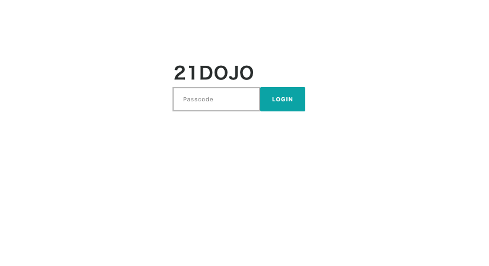
App shell基本構造
アプリケーションシェルの構造を理解して、カスタムアプリを更新していきましょう。カスタムアプリ作成時に以下のようにコードを含むファイルが生成されたと思いますが、それぞれのコードは更新して機能を作りこんでいくことができます、本コースではあくまで構造の外観を説明するのみですので詳細はsmall-shell公式サイトのApp shellも参考にしてください
------------------------------------------------------------
21DOJO has been successfully generated
Access URL: http://161.34.0.111/21DOJO
------------------------------------------------------------
Here is the generated code that you can modify.
You can also update main page on Base App #21DOJO.UI.md.def using markdown.
/var/www/cgi-bin/auth.21DOJO
/var/www/cgi-bin/21DOJO
/var/www/html/21DOJO.css
/var/www/bin/21DOJO_del.sh /var/www/bin/21DOJO_get.sh /var/www/bin/21DOJO_main.sh /var/www/bin/21DOJO_set.sh
/var/www/bin/21DOJO_dl.sh /var/www/bin/21DOJO_log_viewer.sh /var/www/bin/21DOJO_page_links.sh /var/www/bin/21DOJO_table.sh
/var/www/def/21DOJO_auth_form.html.def /var/www/def/21DOJO_get_new_master_failed.html.def /var/www/def/21DOJO_log_viewer.html.def
/var/www/def/21DOJO_del_err.html.def /var/www/def/21DOJO_get_ro.html.def /var/www/def/21DOJO_main.html.def
/var/www/def/21DOJO_get_err.html.def /var/www/def/21DOJO_get_rw.html.def /var/www/def/21DOJO_main.html.incmd.def
/var/www/def/21DOJO_get_new.html.def /var/www/def/21DOJO_get_rw_incf.html.def /var/www/def/21DOJO_set_err.html.def
/var/www/def/21DOJO_get_new_incf.html.def /var/www/def/21DOJO_get_rw_master_failed.html.def /var/www/def/21DOJO_table.html.def
コードの配置
コードは以下のとおり1.cgi-bin 2.bin 3.defに格納されますが、処理の順序も同様の並びとなります。クライアントから要求があるとcgi-bin配下のコントローラーが要求を受け付け、bin配下のスクリプトを呼び出し、スクリプトがdef配下のHTML定義を読み込みながら応答をクライアントに返すという順序で処理がされます
1. /var/www/cgi-bin # アプリケーション全体をコントロールするcontrollerプログラムを配置
2. /var/www/bin # 内部処理を記述したスクリプトを配置、コマンドの実行やDataboxの呼び出しなどを記述
3. /var/www/def # フロントエンドの表示を定義したHTMLを配置 (ブラウザの表示などを定義)
Note
カスタムアプリで編集するのは、主にbin配下の内部処理のスクリプトとdef配下のフロントエンドのHTML定義になります
URL構造
先ほど作成した21DOJOアプリのアクセス用URLは/21DOJOとなっているはずですが、これはauth.21DOJOというプログラムへサーバ側でリダイレクト（転送）されていますので、実体としてはauth.21DOJO（認証プログラム）へ接続していると考えてください
http://{サーバアドレス}/21DOJO --> 転送 --> http://{サーバアドレス}/cgi-bin/auth.21DOJO
認証プログラムにて認証が成功した場合、コントローラーへ自動で接続されます。ログイン後のURLをブラウザからコピーしてみてみましょう、URLはsession情報やsessionを保証するpinコードを含んでいます。また、req=mainという記述も確認できると思いますが、これはmainページのリクエストを意味します
http://{サーバアドレス}/cgi-bin/21DOJO?session=26a289bf7eedac7dfe4e26aa33a912bd36745e158c3592728446f9e57cf1b117&pin=13913&req=main
QUERY STRING
QUERY STRING(クエリーストリング)とはURLに付加するパラメーターですが、プログラムの後に?を付けてパラメーターを記述することでプログラムに値を渡すことができます。上記req=mainというパラメーターはsmall shelフレームワーク上でreqという変数に格納されるmainという値として展開します、また&を付けることで複数のQUERY STRINGをURLに連結していくことができます
コントローラー
コントローラーはcgi-bin配下に置かれ、認証後のセッションの維持やrequest毎にbin配下のスクリプトへのルーティングを記述しています。21DOJOアプリのコントローラーの中身を見てみましょう。cgi-bin配下には設定したアプリケーション名がそのままプログラムとして生成され、コントローラーとして機能します
ルーティング
cgi-bin配下の21DOJOをcatで確認するとルーティングがコード自体に埋め込まれていることが確認できます。req変数(上述のURLではmainが格納された)に入っている内容に応じてcase分で分岐処理を行いますが、small-shellフレームワークではこのcase文をルーティングと呼んでいます。また、ルーティングに際してコントローラーはQUERY STRINGとして渡されたパラメーターをcase文で分岐して実行する後続のスクリプトに渡します。case文を処理しているコードに関しては以下コマンドで確認してください、コントローラの48行目以降が表示されます
sudo tail -48 /var/www/cgi-bin/21DOJO
Parse (パース)
ルーティングに至る前処理としてクライアントから送信(POST) された要求を解析するプログラムとしてparse.shが使用されます。controllerに、例えばitem.dbというデータボックスの主keyであるitem_nameの値をPOSTした場合、controllerは/var/www/tmp/$session配下にitem_nameというファイルを作り、そこにPOSTされたアイテム名を格納します。$sessionは要求の都度生成されるsession値が入ります。詳細はparseを翻訳して確認してください
Note
QUERY STRINGとPOSTはともにサーバにクライアントからデータを渡しますがそれぞれ方法が異なります。QUERY STRINGは前述のとおりURLに埋め込まれていますが、POSTデータは主にフォームを通じてデータ送信されます
スクリプト
コントローラーがルーティングを通じて呼び出すのがbin配下のスクリプトですが、ユーザーへの応答を返すのはこのスクリプト群になります。 スクリプトの主な処理としてはデータシェルへ接続して特定のidを持つdatasetを抽出したうえでHTMLファイルにdatasetを埋め込んで返します。 その際、HTML内にあらかじめ%%タグ(印)を埋め込んでおきsedで抽出したデータに置き換えるという処理を行っています。
たとえば、getスクリプト(/var/www/bin/21DOJO_get.sh)がデータシェルからデータを取得している箇所は以下箇所になります
$DATA_SHELL databox:$databox action:get id:$id keys:$keys format:html_tag > /var/www/tmp/${session}/dataset
データ抽出後にHTMLを還す際はsedで%%datasetタグの中に情報を埋め込みます。その他タグも変換していますが主要な処理はdatasetの変換だと思ってください
# render HTML
cat /var/www/def/${view} | $SED -r "s/^( *)</</1" \
| $SED "/%%common_menu/r /var/www/def/common_parts/21DOJO_common_menu" \
| $SED "/%%common_menu/d" \
| $SED "s/%%user/${user_name}/g"\
| $SED "s/%%type3_app/21DOJO/g"\
| $SED "/%%dataset/r /var/www/tmp/${session}/dataset" \
| $SED "s/%%dataset//g"\
| $SED "/%%history/r /var/www/tmp/${session}/history" \
| $SED "s/%%history//g"\
| $SED "s/%%id/${id}/g" \
| $SED "s/%%pdls/session=${session}\&pin=${pin}\&req=get/g" \
| $SED "s/%%session/session=${session}\&pin=${pin}/g" \
| $SED "s/%%params/session=${session}\&pin=${pin}\&databox=${databox}/g"
HTML(.def)
bin配下のスクリプトが呼び出しているHTMLの定義も見てみましょう。
/var/www/def/21DOJO_get_rw.html.defをみてみると以下箇所に%%datasetタグが埋め込まれていることが確認できます。bin/getスクリプトはこのHTMLを読み込みタグを変換しながらrendering（出力）していると思っていただければと思います
<form id="one-time-form" method="post" action="./21DOJO?%%params&req=set&id=%%id" autocomplete="off" onclick="document.charset='utf-8';">
<ul>
%%dataset
</ul>
</button>
アプリのカスタマイズ
大枠の構造を把握したところで、さっそくアプリのカスタマイズを行っていきましょう。
メインページの編集
まずは21DOJOへのログイン時に最初に表示されるメインページに最新のイベント情報が出てくるようにしていきます
HTML編集
今回のメインページはリンクなどを細かく定義したいため、markdownでは記述せずHTMLを記述します。Base Appログイン後、21DOJO.UI.md.defデータボックスを選択し、以下の通りBodyを全て消してコードを貼り付けて更新してください。
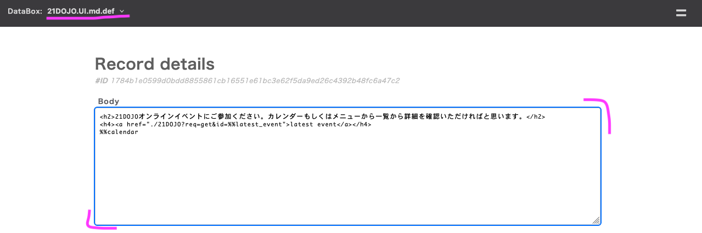
<h2>21DOJOオンラインイベントにご参加ください。カレンダーもしくはメニューから一覧から詳細を確認いただければと思います。</h2>
<h4><a href="./21DOJO?req=get&subapp=sub1&id=%%latest_event_id">latest event</a></h4>
%%calendar
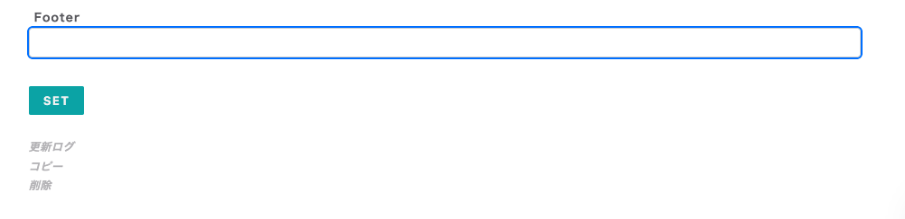
上記コードをSETボタンを押して投入後、カスタムアプリに再ログインしたイメージが以下画像になります。現時点で%%latest_eventタグの処理が実装されていないため"latest event"リンクをクリックしてもエラーになります
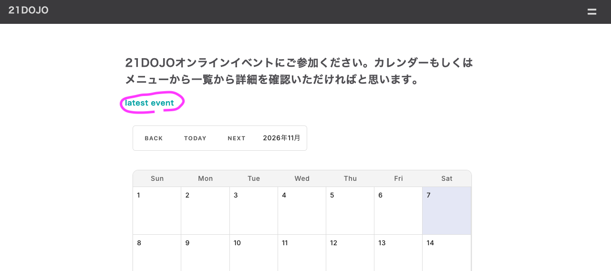
Note
画面を下にスクロールするとカレンダー全体が表示されます。メインページのbodyに%%calendarタグを記載するとその箇所にカレンダーを表示することができます。特に制限をかけていない状態のため+ADDボタンからイベントを登録したり、確認したりすることができます
また、メニューを展開した際にイベント一覧の表示がない状態になっています
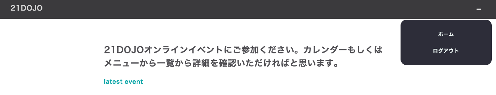
データボックスの追加
アプリ内でデータボックスをメニューに表示させ、各種リンクを機能させるためにデータボックスを追加したいと思います。今回はsub1というサブアプリを21DOJOのサブアプリとして作成し、21DOJO.eventsをサブアプリ経由で操作可能な状態にします
$ /usr/local/small-shell/adm/gen -app
Type of App (1.BASE | 2.FORM | 3.CUSTOM): 3
App Name: sub1@21DOJO
Subapp Databox: 21DOJO.events
最終確認が問題なければyesを入力して、サブアプリを生成してください。その後、アプリに再ログインすると右側のメニューに21DOJO.eventsのテーブルが表示されています
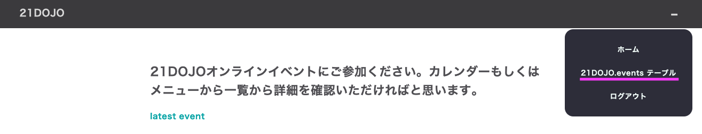
再びBase Appの21DOJO.UI.md.defデータボックスのページ編集画面に戻り、メニュー表示をイベント一覧に変更しましょう
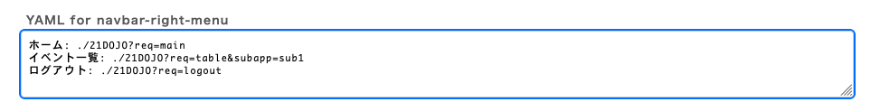
その後再度ログインすると、イベント一覧がメニューに表示されるようになりました。イベント一覧をクリックするとテーブル形式でイベントの一覧が表示されることを確認してください
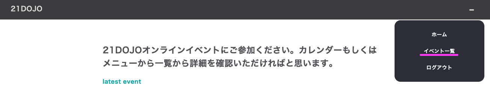
内部処理の編集
続いて21DOJOのmain.shにてリンク内に埋め込まれている%%latest_event_idタグの変換処理をいれます。以下のとおりrender HTMLというコメントの下の行をコメントアウトして 追加コードを追記してください
sudo nano /var/www/bin/21DOJO_main.sh
# -----------------
# render HTML
# -----------------
# 以下行をコメントアウト
#cat /var/www/def/21DOJO_main.html.def | $SED -r "s/^( *)</</1" \
#| $SED "/%%common_menu/r /var/www/def/common_parts/21DOJO_common_menu" \
#| $SED "s/%%common_menu//g"\
#| $SED "/%%events/r /var/www/tmp/${session}/events" \
#| $SED "/%%event_add_btn/r /var/www/tmp/${session}/event_add_btn" \
#| $SED "s/%%event_add_btn//g"\
#| $SED "s/%%user/${user_name}/g" \
#| $SED "s/%%session/session=${session}\&pin=${pin}/g" \
#| $SED "s/%%params/session=${session}\&pin=${pin}/g"
# 以下行を追加
latest_event_id=$($DATA_SHELL databox:21DOJO.events command:head_-1 format:none | $AWK -F "," '{print $1}')
cat /var/www/def/21DOJO_main.html.def | $SED -r "s/^( *)</</1" \
| $SED "/%%common_menu/r /var/www/def/common_parts/21DOJO_common_menu" \
| $SED "s/%%common_menu//g"\
| $SED "/%%events/r /var/www/tmp/${session}/events" \
| $SED "/%%event_add_btn/r /var/www/tmp/${session}/event_add_btn" \
| $SED "s/%%event_add_btn//g"\
| $SED "s/%%user/${user_name}/g" \
| $SED "s/%%latest_event_id/$latest_event_id/g" \
| $SED "s/%%session/session=${session}\&pin=${pin}/g" \
| $SED "s/%%params/session=${session}\&pin=${pin}/g"
Note
追加している処理の具体的な内容としてはdataboxの最新の1行目のエントリーをhead -1でサーチして、idを取得しsedで%%latest_event_idを上書きすることでリンクにidを埋め込んでいます
上記更新ができたら再度ログインをしてlatest eventリンクが機能していることを確認してください。もしイベントが登録されていない場合新規追加になってしまいますが、その場合はそのままイベントを登録してください。以下例ではすでにイベントが登録され、リンクが機能している状態になります
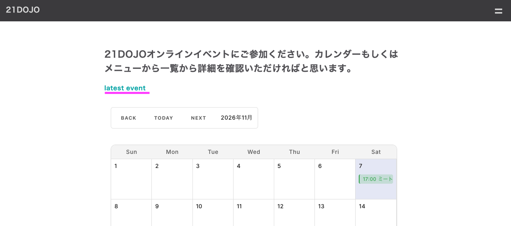
Read onlyへの変更
21DOJOはshared passのためシステムユーザーでログインしますが、イベント詳細ページなどでイベントの編集権限をもってしまっています。そのため、このユーザーをread onlyに変更することでアプリ全体が読み取り権限のみとなり書き込みができなくなります
$ sudo /usr/local/small-shell/adm/ops set.attr:21DOJO.app{ro} app:21DOJO
successfully set attr peremission 21DOJO/21DOJO.app{ro}
その他の高度な機能
Graph生成
pyshellを使うことで容易にGraph生成ができます、まずはsmall-shell公式のStatisticsに関する項目を確認してpython及びpython libraryのインストールをしてください。
インストールが完了したら、公式サイトの手順通りにpyshellのセットアップが完了しているか確認しましょう、以下ではpyenv設定が適切に実施されpython3.12がインストールされていることを確認します
$ ls /usr/local/bin/python3.12 /usr/local/bin/python3.12
日本語を扱えるようにフォントをインストールしてフォント定義を変更しましょう
# フォントインストール
$ sudo apt install fonts-ipaexfont $ sudo vi /usr/local/small-shell/util/pyshell/pyenv
--code--
font_family="IPAexGothic"
--------
# キャッシュの削除 (もし以下ディレクトリにfontlistがある場合は削除してください）
$ sudo ls /home/small-shell/.cache/matplotlib fontlist-v3.11.0.json
$ sudo rm /home/small-shell/.cache/matplotlib/fontlist-v3.11.0.json
Snapshot Graph
pyshell環境が適切に設定できていたら、utility scriptであるcountup.shを使ってスナップショットグラフを作成しましょう。スナップショットグラフとはpyshell実行時点のデータを集計し、記録したグラフです。スナップショット以外にデータ蓄積を前提としたhourly, daily, monthlyのグラフの作成が可能です。以下はsmall-shell基礎2でアンケート集計のために作成したsurvey.dbを"良い"、"普通"、"悪い"でそれぞれデータを集計するコマンド例になります
$ sudo -u small-shell /usr/local/small-shell/util/scripts/countup.sh databox:survey.db key:impression filters:良い,普通,悪い type:pie frequency:snapshot
Note
countup.shは指定のDataboxのデータに対し指定のwordで検索をかけ、その件数を集計しグラフにします
Graphの確認
countup.shの実行がエラーなく完了したらconsoleでgraphを確認しましょう、command lineに#statsと打ち込めば作成されたグラフの一覧が出てきます。
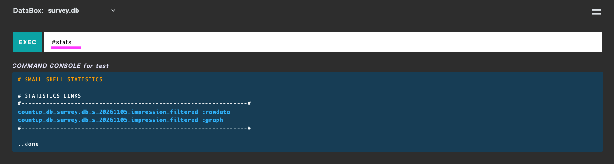
グラフリンクをクリックするとポップアップで表示されます
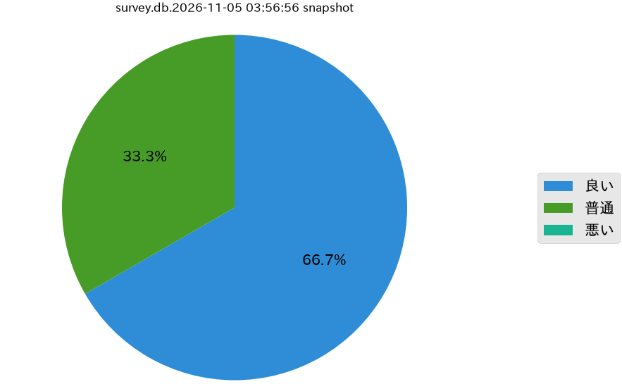
定期ジョブの登録
定期ジョブを用いて、定型処理を自動で実行することができます。詳細に関しては公式サイトのe-cronを参照してください
テンプレートの利用
small-shellの周辺プロジェクトとしてテンプレートがいくつか公開されています、ここではTeam Appをインポートして使ってみましょう。Team Appではチームの共同作業に必要な機能をパッケージ化したsmall-shellフレームワークを利用したツールです。チームのカレンダー共有、ファイル共有、タスクの可視化、外部からの問い合わせ受付などが行えます。また、Team Appに管理したいDataboxを追加することもできます
Team App install
早速Team Appをインストールしましょう、git cloneした後deploy.shを実行するとアプリとDataboxが自動生成されます。
テンプレートのダウンロードはgit cloneコマンドでおこないます
git clone https://github.com/naruoken/small-shell-apps
なお、small-shell-appsパッケージは前ページでの日本語化の際にすでにgit cloneをしているため以下実行例ではエラーが表示されています
# ダウンロード
$ cd $HOME; git clone https://github.com/naruoken/small-shell-apps ※前ページでの日本語化パッケージインストールの際にgit
cloneをしているため以下エラーが表示される可能性があります fatal: destination path 'small-shell-apps' already exists and is not an empty directory.
# Team Appのインストール
$ cd ${HOME}/small-shell-apps/team_app; sudo ./deploy.sh small-shell root (/usr/local/small-shell): ※特に何も入力せず、ENTERを押してください
# Team Appの日本語化
$ cd ${HOME}/small-shell-apps/dictionary/JP; sudo ./deploy.sh small-shell root (/usr/local/small-shell): ※特に何も入力せず、ENTERを押してください
Team Appユーザー追加
Team AppはBase Appのユーザーを引き継ぎませんので、deploy.shのインストラクションに従って作成しましょう。以下ではteam Appにtestというユーザーを作成しています
$ sudo /usr/local/small-shell/adm/ops app:team add.usr:test
ユーザー生成後に、Initialize URL（鍵の初期化URL)が生成れるのでユーザーへURLを案内しましょう。Base Appと同じくInitialize URLへアクセスするとTeam Appへアクセスするための鍵とリンクが生成されます。Initialize URLは一回アクセスすると無効になるので気をつけてください
Team Appログイン
Team Appへログインして右上のeven(=)メニューをクリックするとメニューが展開します。各種機能をお試しください, Team eventやtaskをカレンダーに一元的に表示できるので便利です。ドライブを使うとファイル共有も簡単に行えます
http://{サーバアドレス}/team
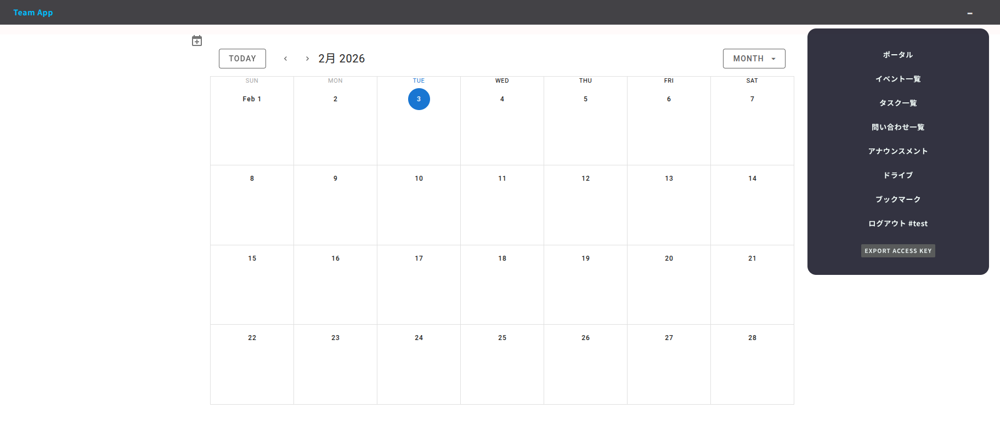
その他操作
アプリへのタグの追加
カスタムアプリのテーブルにタグを追加したい場合、以下コマンドを実行してください。tag機能の詳細についてはこちらを参照してください
# 検索ワードのみを設定したい場合
sudo /usr/local/small-shell/adm/ops add.tag:$databox{$word} app:$app_name
# keyを指定したい場合
sudo /usr/local/small-shell/adm/ops add.tag:$databox{$key{$word}} app:$app_name
# statusがon-goingなタスクをフィルターするtagを追加
$ sudo /usr/local/small-shell/adm/ops add.tag:tasks{status{on-going}} app:tasks
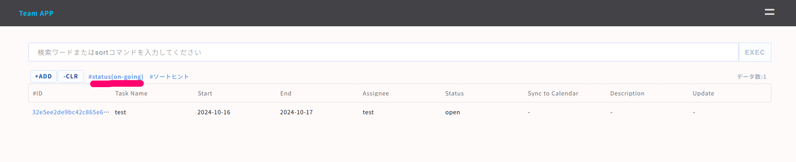
Initialize URLの再生成
Custom Appの鍵生成URLを再生成する場合、app:オプションを指定する必要があります
sudo /usr/local/small-shell/adm/ops app:<アプリ> initialize.usr:<ユーザー名>
# team Appを指定する場合
$ sudo /usr/local/small-shell/adm/ops app:team initialize.usr:test
さらなる学習のために
small-shell公式サイトにはより詳細なドキュメントが公開されていますので、興味のあるかたは是非ブラウザの翻訳機能などをつかって読んでみてください。